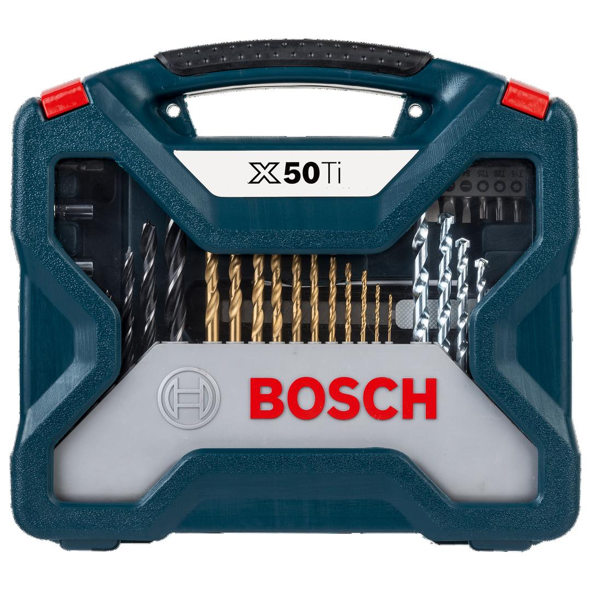
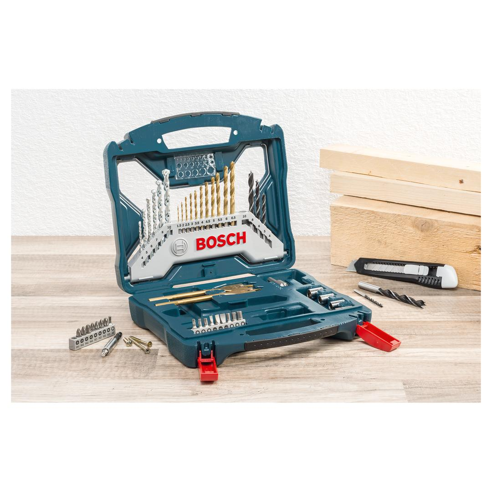

2607017406


| Contents |
11 HSS-TiN-coated metal drill bits, Ø 1.5-6.5 mm
6 masonry drill bits, Ø 4-10 mm
5 wood drill bits, Ø 4-10 mm
2 spade bits, TiN-coated, Ø 16/22 mm
18 screwdriver bits, L=25 mm
PH 1/2/2/3
PZ 1/2/2/3
S 4/6/7
HEX 3/4/5/6
T 15/20/25
3 nutsetters, Ø 7/8/10 mm
1 diameter gauge
1 knife
1 adapter for nutsetters
1 universal holder, magnetic
1 countersink |
| Packaging |
Plastic case with window and printed card |
| Dimensions (lxwxh) |
258 x 231 x 64 mm |
| Weight |
1.124 kg |
| Pack quantity |
50 Pcs |
| Minimum order quantity |
6 Pcs |
DIY with Bosch quality: Drilling and screwdriving made easy.